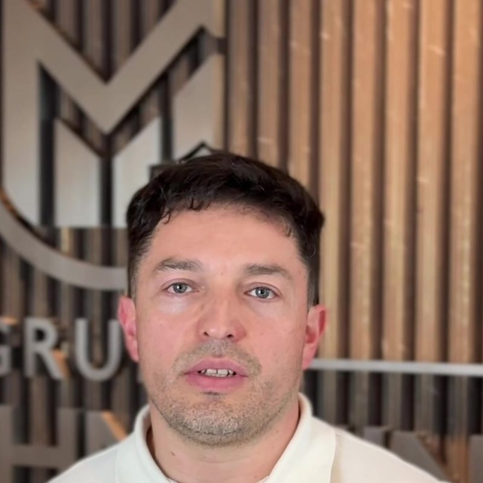

Si tienes desde $5 millones en el banco y nunca has invertido, te explicamos en simple qué propiedad respalda tu dinero, qué documento queda a tu favor y cómo lo recuperas. Sin tecnicismos, sin apuro y con tu abogado revisando todo si quieres.
Operaciones bajo contratos civiles, no reguladas por la CMF. Toda inversión tiene riesgos. Revisa los documentos con tu abogado antes de firmar.
Es lo que nos dice casi todo el que llega por primera vez. Y tiene sentido: con tu dinero no se juega.
Sé que el depósito a plazo no alcanza, pero no sé qué otra cosa hacer.
Me da miedo que me estafen. Escucho cada historia…
No quiero firmar algo que no entiendo.
Invertir es para gente con mucho dinero o que sabe de finanzas.
¿Y si necesito el dinero y no lo puedo sacar?
Lo tengo que conversar con mi pareja antes de hacer cualquier cosa.
Lo que hace casi todo el mundo es renovar el depósito una vez más, probar una app "con poquito" sin entender bien qué hay detrás, o seguir el consejo de un conocido. Y el tiempo pasa con el dinero quieto, perdiendo poder de compra frente a la inflación.
No te frena la falta de dinero ni de inteligencia. Te frena que nadie te explicó una opción que pudieras entender completa, con algo concreto detrás.
Preguntar si algo es una estafa no es desconfianza, es responsabilidad. Estas son las tres señales que te recomendamos revisar en cualquier inversión, y cómo respondemos a cada una.
Si inviertes el dinero que vas a necesitar, cualquier imprevisto te obliga a salir en mal momento. Y una primera mala experiencia se convierte en la razón para no volver a invertir nunca.
Por eso la primera conversación es sobre ti: cuánto tienes, para qué es ese dinero y cuánto necesitas disponible si pasa algo. Si lo sensato es que inviertas menos, o que todavía no lo hagas, te lo vamos a decir.
Tienes $10 millones ahorrados. Quizás lo sensato es mover 5 y dejar 5 de colchón.
Empiezas con el mínimo y creces a medida que ganas confianza. No tienes que poner todos tus ahorros.
Muchas alternativas dicen "respaldo inmobiliario" sin explicar qué hay detrás. Nosotros trabajamos al revés: antes de que inviertas un peso, puedes revisar tres cosas.
En Pulso partimos por una propiedad concreta. Identificamos oportunidades bajo su valor comercial estimado y ponemos los antecedentes sobre la mesa: la propiedad, su tasación y su precio de compra. Así puedes revisar el activo y evaluar la oportunidad con tu abogado antes de decidir.
Cada inversión debe dejar claro quién tiene la obligación de pago, qué documento respalda esa obligación y qué acciones puedes ejercer si no se cumple. Según la solución, puede quedar formalizada mediante un mutuo y pagaré, una hipoteca inscrita o la propiedad a tu nombre. Los documentos se firman ante notario y puedes revisarlos antes de firmar.
Antes de invertir conoces las condiciones económicas de la operación, el plazo, las fechas de pago y la forma en que se devuelve tu capital. Durante el proceso recibes reportes y revisamos contigo aspectos como la salida anticipada, los atrasos, la herencia y el cierre.
Es la línea pensada para quien invierte por primera vez. Así funciona, paso por paso:
Con honestidad: comprar bajo el valor comercial es un antecedente que revisas antes de firmar, no una promesa. Ese margen no elimina el riesgo. Por eso te pedimos que lleves los documentos a tu abogado.
Pulso tiene tres líneas. En cada una cambia el monto de entrada y el documento que queda a tu favor.
| Línea | Desde | Qué queda a tu favor | Plazos |
|---|---|---|---|
| Proyecta un HogarPara empezar | $5 millones | Mutuo y pagaré ante notario, respaldados por el patrimonio inmobiliario de Pulso | 12, 18 o 24 meses |
| Hipoteca Inteligente | $25 millones | Hipoteca inscrita en el Conservador de Bienes Raíces a tu favor | 15, 21 o 27 meses |
| Inversión Inmobiliaria Circular | $100 millones | La propiedad inscrita a tu nombre | 15, 21 o 27 meses |
Las condiciones de cada operación (rentabilidad, fechas de pago y devolución) quedan escritas en tu contrato y te las mostramos en la reunión. Operaciones bajo contratos civiles, no reguladas por la CMF. Toda inversión tiene riesgos.
Para que llegues a la reunión entendiendo todo, y puedas explicárselo a tu pareja.
“Para mí han sido personas confiables y lo he podido comprobar durante estos dos años.”
Tenía sus ahorros en el banco. Lleva dos años invirtiendo con Pulso, recibe reportes trimestrales y sus pagos en las fechas acordadas.
“Buscaba un respaldo más concreto.”
En su operación se cumplieron el plazo y la rentabilidad pactados. Valoró que todo se formaliza ante notario.
[REQUIERE: caso real de primera inversión]
Profesión y edad · cuánto tenía en el banco · cuál era su miedo principal · con cuánto empezó · una frase textual, con autorización escrita.
Experiencias personales. Resultados anteriores no aseguran resultados futuros. Operaciones bajo contratos civiles, no reguladas por la CMF. Toda inversión tiene riesgos. Revisa los documentos con tu abogado antes de firmar.
Pulso Inversor es una empresa de Grupo MatchMaking. Estas son algunas de las personas que vas a conocer, y los datos que puedes revisar por tu cuenta.

Felipe Rojas[REQUIERE: cargo] Iván Barboza[REQUIERE: cargo]
Iván Barboza[REQUIERE: cargo]Con hechos que puedes revisar: personas con nombre y cara, clientes reales que cuentan su experiencia, una operación concreta con su propiedad y sus documentos, y firma ante notario. No prometemos rentabilidades fuera de mercado ni te apuramos. Y te pedimos que lleves todo a tu abogado antes de firmar.
Porque no son un producto financiero de la CMF, como un fondo mutuo o un depósito. Son contratos civiles, regidos por el Código Civil, entre tú y Pulso. Eso significa que tu respaldo está en los documentos que firmas (el mutuo, el pagaré, la hipoteca o el título), y por eso es tan importante que los revise tu abogado.
Por eso importa qué documento queda a tu favor. En Proyecta un Hogar tienes un mutuo y un pagaré firmados ante notario, que te permiten cobrar por la vía legal. En Hipoteca Inteligente tienes una hipoteca inscrita a tu favor, y en Inversión Inmobiliaria Circular la propiedad queda a tu nombre. Cada línea mantiene riesgos, y te los explicamos de frente en la reunión.
Las condiciones de cada operación (rentabilidad, fechas de pago y devolución del capital) quedan escritas en tu contrato y te las mostramos en la reunión, con los números de tu caso. No las publicamos como anzuelo, porque la pregunta más importante en tu primera inversión no es cuánto ganas, sino qué respalda tu dinero.
[REQUIERE: política real de salida anticipada]. Por eso partimos con un diagnóstico: para que inviertas solo lo que no vas a necesitar en ese plazo y conserves tu colchón.
Pulso compra propiedades entre 35% y 50% bajo su valor comercial estimado. Ese margen es un antecedente que puedes revisar, pero no elimina el riesgo. Te lo decimos así, sin adornos.
No. $5 millones es el mínimo, y la idea es justamente que no pongas todo tu ahorro. Si lo sensato es que inviertas una parte y dejes el resto de colchón, te lo vamos a recomendar.
Sí, y te lo recomendamos. Es una decisión que se toma mejor acompañado. Puedes venir con tu pareja, un socio, un familiar o tu abogado.
No. La reunión es para responder tus dudas, no para firmar. Te llevas los documentos y los revisas con calma.
Los pagos llegan a tu cuenta en las fechas pactadas en tu contrato. Además recibes reportes trimestrales y tienes a tu asesor disponible por teléfono hasta el cierre.
Para la primera conversación solo necesitamos tu nombre, tu WhatsApp, tu correo y una idea de cuánto podrías invertir. Los usamos únicamente para contactarte por esta consulta. Más detalle en nuestra política de privacidad.
Déjanos tus datos y un asesor con nombre y apellido te escribe por WhatsApp para coordinar. Trae todas tus preguntas.
Un asesor de Pulso te escribirá por WhatsApp con su nombre para coordinar la conversación. Si prefieres adelantarte, escríbenos ahora:
Escribir por WhatsAppMientras tanto, anota tus preguntas y, si quieres, invita a tu pareja o a tu abogado a la reunión.